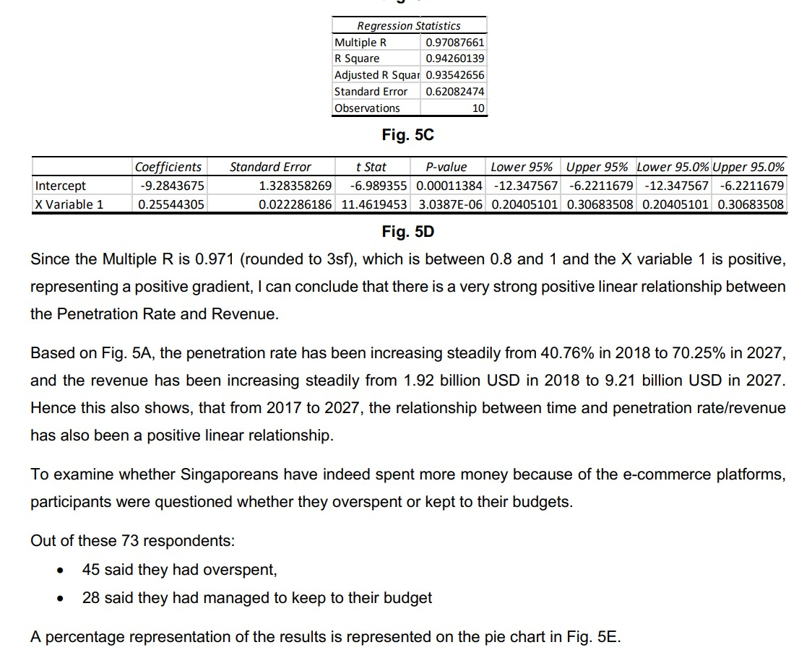
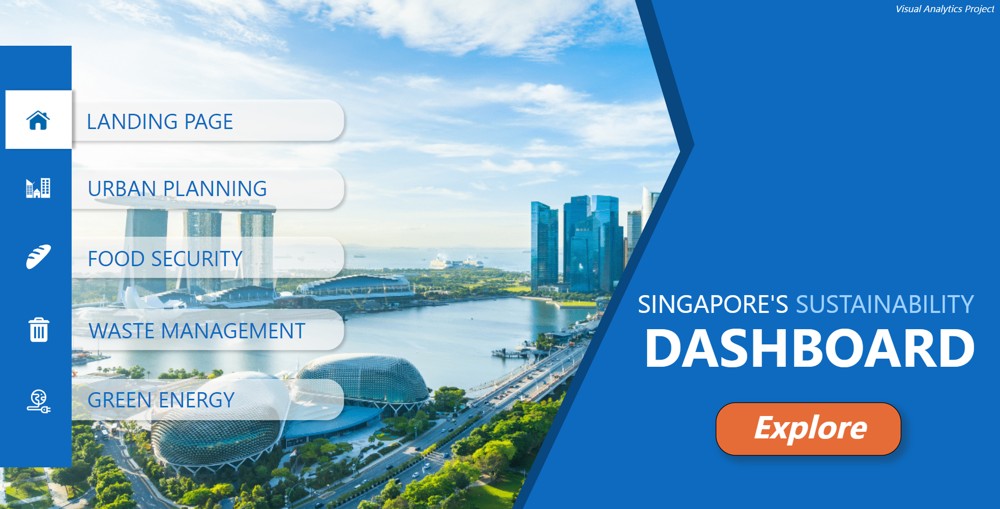

As the team leader for the San Marimo Resorts website in the UX Design module, I led a collaborative effort to create a visually stunning and user-friendly platform. Emphasizing user research and iterative design, I ensured a seamless experience. This project showcases my leadership skills and commitment to user-centric design in a concise and impactful manner.
View More >Hello!
I am Wen Bing
Hi I am an AI Enthusiast currently pursuring a diploma in Applied AI and Analytics in Nanyang Polytechnic.
I aspire to be an AI Engineer in the future.
With a strong passion in Artificial Technology and Analytics, I have joined different clubs, completed certifications and joined various competitions to expand my knowledge and connections.
Click the buttons below to find out more!
About Me
My Skills
Python
- Data Structures
- Lists, tuples, dictionaries.
- Comprehensions for efficient coding.
- Algorithms
- Sorting, searching, recursion, and dynamic programming.
- Graph problem-solving.
- Data Visualisation
- Matplotlib, Seaborn, Pandas for static plots.
- Plotly, Bokeh for interactive visualizations.
Data Visualisation with PowerBi
- Data Cleaning and Transformation
- Skill in cleaning and transforming raw data into a format suitable for analysis.
- Knowledge of Power Query, a data connection technology in Power BI, to perform ETL (Extract, Transform, Load) operations.
- Data Modelling
- Ability to create effective data models by defining relationships between tables.
- Understanding of star schema or snowflake schema to optimize data for analysis.
- Data Analysis Expression (DAX)
- Proficiency in writing DAX formulas to create custom calculations, measures, and columns.
- Knowledge of DAX functions for aggregations, filtering, and time intelligence.
Database Management
- Querying and Data Retrieval
- Writing SELECT statements with conditions.
- Using sorting and limiting techniques.
- Employing WHERE clauses for data filtering.
- Data Manipulation and Aggregation
- Updating and deleting records with SQL statements.
- Utilizing aggregate functions (COUNT, SUM, AVG).
- Grouping data and applying conditions with GROUP BY and HAVING.
Website Designing
- Website Structure
- Use semantic HTML for well-organized content.
- Implement responsive design for various devices.
- Apply CSS for consistent and visually pleasing styles.
- Leverage W3.CSS or Bootstrap for efficiency.
- Dynamically update and modify content, styles, and structure on the webpage.
- Implement event listeners to respond to user interactions or browser events.
- Handle actions such as clicks, keypresses, or form submissions to trigger specific JavaScript functions.
- Enhance interactivity and create responsive web applications.
My Current Certifications

AI4I: AI Project Lifecycle
This is a 6-hour course that goes through a comprehensive overview of an end-to-end project workflow. Itg also teaches essential concepts required for an AI project.
Learning Objectives:
- Understand the end-to-end workflow involved for an AI project
- Understand the essential concepts at each step of the workflow
- Understand Cross Industry Standard Process (CRISP)
- Understand project management concepts
AI4I: Literacy in AI
Literacy in AI is a 5-hour course which introduces learners into the world of machine learning. It also explores the topic of ethics in AI.
Learning Objectives:
- Understand common machine learning terms
- Understand what machine learning models are
- Understand the basic workings of deep learning
- Be able to identify possible ethical issues in a typical AI project
Projects
Welcome to my professional portfolio showcasing three distinct projects that highlight my diverse skill set. In the realm of UX design, I've seamlessly integrated web development skills to craft engaging and intuitive user experiences. Navigating through my web design project will unveil a fusion of creativity and functionality aimed at enhancing user satisfaction. On the statistical analysis front, I delve into the world of data with Python, meticulously dissecting patterns and trends to derive meaningful insights. Lastly, my proficiency in visual analytics shines through in the Power BI project, where I've transformed raw data into compelling visual narratives, offering a comprehensive understanding of complex datasets. Explore this homepage for a glimpse into my multifaceted expertise, where each project reflects my commitment to delivering innovative solutions across UX design, statistical analysis, and visual analytics.
Website for San Marimo
Team Leader

Statistical Research on Technology
Team Leader
As the Team Leader for my group in the IT1302 Statistical Research Methods module, I spearheaded a report examining the effects of technology on youths. My role involved utilizing statistical analysis and surveying skills to collect and analyze data on the technological habits of young individuals. The report provides concise statistical insights into the impact of technology on various aspects of their lives, showcasing the collaborative effort of our team in producing a comprehensive analysis.

Visual Analytics Project
Team Leader
As the Team Leader for my group, I spearheaded a PowerBi solution examining Singapore's sustainability efforts. My role involved utilising statistical analysis, and finding datasets online to transform them into visuals on PowerBi dashboards to educate young people about the sustainability efforts in Singapore. The solution provides concise statistical insights into sustainability efforts in Singapore on various aspects, showcasing the collaborative effort of our team in producing a comprehensive analysis.
